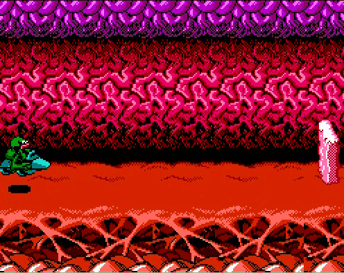

Battletoads
Dacă la vederea imaginii de mai sus v-a trecut un fior rece pe șira spinării, nici nu mai are rost să explic de ce am făcut această alegere.
S-o luăm cu începutul.
Acum câteva mii de ani, pe când eram încă copil, perioadă sărbătorilor de iarnă era pentru mine singura ocazie în care aveam niște bani ai mei din bunăvoința neamurilor și a vecinilor. După câteva zile de colindat și mers cu sorcova reușeam să adun destui bani încât să trezesc invidia părinților. În câteva seri reușeam să adun cam un sfert de salariu de al lor. Nu știu dacă asta spune multe despre cât de frumos cântam noi sau despre cât de puțîn se câștiga pe atunci în fabrici. Mai apoi, ca niște veritabili bullies părinții îmi luau toți banii și în nesăbuință lor îmi cumpărau de ei rechizite sau haine - visul oricărui copil.
Dar acum vreo 20 de ani s-a petrecut o minune. După ce ne-a luat tot felul de rechizite mie și fratelui meu, mama și-a dat dat seama că a mai rămas cu niște zile din lună la sfârșitul banilor așa că ne-a îndemnat să ne luăm fiecare din magazin ce vrem. Un singur raft ne interesa din tot magazinul respectiv, un raft unde erau expuse casete sigilate pentru Terminator.
La momentul respectiv erau doar vreo 4 casete acolo: Contra, Duck Tales, una pe care nu o mai rețin și încă una care avea pe copertă niște broaște super cool, cu ochelari de soare. Nu conta că nu arătau a țestoase și că titlul era diferit, pentru mine și frate-meu era clar cu ce avem de-a face: ŢESTOASELE NINJA!!! Fiecare separat nu mai aveam destui bani să cumpărăm caseta, așa că am pus banii la comun și am plecat apoi cu ea acasă.
Am băgat jocul în consola și nu a durat mai mult de câteva minute să ne dăm seama că ne-am înșelat în legătură cu personajele jocului, dar deja eram prea prinși de muzica din meniu și de grafică ca să mai conteze. Pentru cei care nu l-ați încercat încă, jocul e un side-scroller excelent ce oferă și posibilitatea de a-l juca în doi, ceea ce era ideal pentru doi frați. Rețin și acum că începea cu o secțiune cu bătaie unde friendly fire-ul era pornit. Mai apoi urma o secțiune în care jucam la persoana a doua (nu am mai întâlnit așa ceva) în care noi vedeam acțiunea din perspectiva first person a unui robot care încasa bătaie de la broaștele noastre. Apoi coboram într-un vulcan printr-o groapă unde niște ciori încercau să ne taie funiile. O dată ajunși în groapă aveam de-a face cu un fel de canguri violenți în timp ce încercam să evităm să cădem în lavă.

Iar apoi iadul. Poza de mai sus arată secțiunea în care trebuia să încălecăm niște jetski-uri și să trecem de niște borduri ca să ajungem la capătul nivelului. Nu exagerez deloc când zic că am încercat asta de sute de ori. Când veneau prieteni în vizită îi puneam și pe ei să încerce. L-am pus și pe tata în caz că suntem noi prea nepricepuți. Ori cădeam în lavă la câte un salt prost calculat, ori ne izbeam de un zid care era pus mult prea aproape de un altul și devenea imposibil de evitat. Partea cea mai proastă era că viețile se terminau repede și la final trebuia să reluăm întreg jocul: bătaie-robot-groapă-canguri-jetski. Cunoșteam atât de bine partea asta de început încât ajungeam cu viețile intacte la jetski, dar degeaba. După câteva săptămâni a deveni atât de frustrant încât orice parte frumoasă a jocului era umbrită de nivelul cu jetski. Cred că asta e jocul care ne-a provocat primele rage-quit-uri.
Acum câțiva ani mi-am amintit de el și am căutat mai multe informații despre cum se poate trece acel nivel. Aparent nu prea se poate, iar atunci când se poate cică urmează un nivel chiar mai dificil unde renunţă și cei mai pricepuți jucători. Chiar și acum Battletoads e pe lista celor mai dificile jocuri din istorie. Nu o să înțeleg niciodată de ce developerii au decis să lase nivelul respectiv așa, pentru că sunt sigur că și testerii au avut aceleași probleme ca noi.
Ceea ce putea fi o poveste frumoasă de după Crăciun s-a transformat într-o tragedie. De câte ori se întâmplă să fiu într-un vulcan lângă un jetski simt cum începe să îmi tremure degetele și să mi se zbată ochiul drept, iar eu blestem broaștele alea bătăuşe și ziua în care ele n-au fost ţestoasele ninja. ■